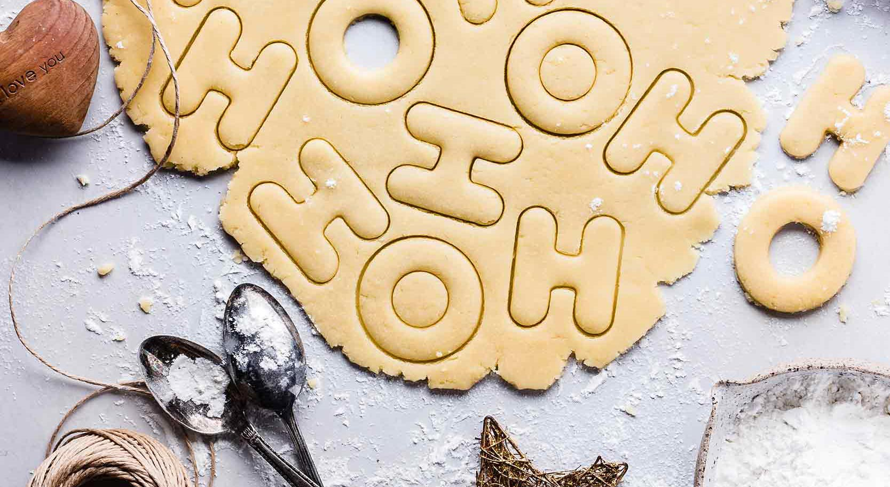

The Canadian Holiday Cookie Recipe Book
Fabulously Festive Holiday Cookie Recipes — plus how to freeze and ship them right!
Let’s be honest. This is why it’s the most wonderful time of the year.
Is there a time of year where the phrase “I made cookies!” is greeted with more excitement? It’s hard to tell who is more excited, the lucky recipient or the baker. Holiday baking means layered treats, sugar-dusted biscuits, not to mention icing, sprinkles and cutouts galore. Serious bakers have been looking forward to this time of year since, oh, Labour Day. And whether you’re one of them or a novice, we’ve got exactly what you need to make your cookie baking a success from start to finish. We’ve rounded up some of our favourite holiday cookie recipes plus the three tips you’ll need specifically for these festive batches. From working ahead to shipping cross-country, here’s how to make holiday cookies like Santa’s star elf.
Start baking now!
Most cookies freeze well (note: some do not, like cookies with delicate structures, fine decorations or temperamental fillings) which is a great reason to get a head start. A better reason to start early is that this way, if you burn a batch or forget an ingredient, you have lots of time for do-overs. The best reason is time to make extra batches for yourself after you get your potluck and gifting baking done. And as the mid-December holiday crunch comes, you’ll be so happy you baked early in the month.
But, you want to bake and freeze correctly to preserve your masterpieces.
The easiest way to do this is to bake off the cookies, let them cool, then freeze them in a single layer on a baking sheet before popping them into an airtight freezer container or resealable bag. Alternatively, you can layer cookies between pieces of parchment to freeze them on the baking sheet before and sealing them up. By preventing them from freezing together, you not only preserve the integrity of your creations, you can easily grab just a handful for any occasion and extend your supply by only thawing what you need.
To recreate that freshly-baked quality, pop frozen cookies into a 275F degrees oven and gently reheat for 10-15 minutes.
Have holiday cookies, will travel — here’s how:
A box of your homemade cookies is the perfect gift for someone who can’t make it home this year. With the right recipes and packaging, they’ll easily survive a trip. Choose naturally-dry cookies like biscotti, or something with an extra-high sugar and fat content like shortbread. Both of these kinds of cookies will still taste as they should a week later.
Pack your cookies tightly for travel. Seal them in a plastic bag, sucking the air out of it with a straw. Put that bag in an airtight container with hard sides, and one that fits the cookies snugly, so when the box moves, the cookies don’t. Think ahead and save packaging from online orders throughout the year so you can shove bubble packaging between your mailing box and the container as a buffer.
Gluten-free holiday cookies are a thing. A delicious thing!
Gluten-free holiday cookies are easier than you think, and are always handy to have on hand in case you’re hosting someone with gluten intolerance or sensitivity. Recipes for macarons and meringues are usually naturally gluten-free, so bake them off for your cookie platter, or let them stand on their own. Bonus: both can be made ahead too.
If you’re baking for someone with celiac disease, you’ll want to be especially careful to avoid cross-contamination, for instance, never use a spoon that was dipped into flour into your sugar bowl. And because cross-contamination can also occur in the factory, make sure all of your ingredients, even baking powder, are labeled ‘gluten-free’ to ensure they’re safe.
Most everyone, whether gluten-sensitive or intolerant, or not, will really appreciate a batch of these Chickpea Chocolate Mint Chip Cookies, trust us!
With tips for baking ahead, sending cookies by mail successfully, and gluten-free baking, let’s get to the recipes. Following are some of our favourite cookie recipes. Perfect for the holidays and perfect to get started on right now!